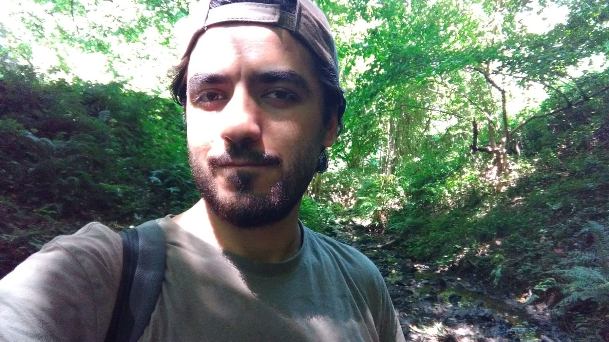

Ben Hüseyin. Doğayı, dağı, taşı seviyorum. Snowpiercer izliyorum. Tarih ve kurgusu tarihten bir konu olan kitapları seviyorum. Birşeyler öğrenmeye çalışıyorum. Kararlıyım. Her şeye rağmen hayat güzel.
Bu aralar gold panning ile ilgileniyorum. Neredeyse her yerde doğal olarak altın bulunur. Altını bulmak için birçok parametreyi takip ederek doğru yerde doğru bir şekilde çalışma yapmalısınız. Nehir yatakları, buralardaki plaserler ideal alanlardır.
